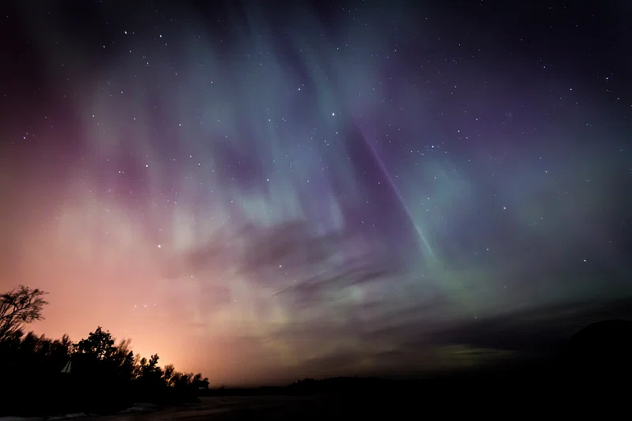

Aurora Borealis/Northen Lights!
The Aurora Borealis, or known as the northern lights, are beautifully displayed ribbons of light. They can usually be seen from the North pole, and are pretty cool!
How is this caused?
- According to the Michigan Tech page, the lights are caused, by "the interaction between the Earth's magnetic field and charged particles from the sun's atmosphere that enter the earth's atmosphere.
- So, to summarize, a solar flare. Which are basically particles with energy, directly from the sun, that float in space.
So, what happened yesterday with the lights? Why was it seen clearly?
- Well, this is because for the past few monthr or so, the sun had been active in the sense that it had been sending out more flares than usual
- According to CBS NEWS, they state, "The geomagnetic storm responsible for Thursday's stunning skies is now subsiding, CBS Boston reported."
Where was it seen?
- New York
- Tennesse
- Carolina
- Mainly to the south
When can you see it next if you missed it?
- March
- August/end of August
- October, towards the end
